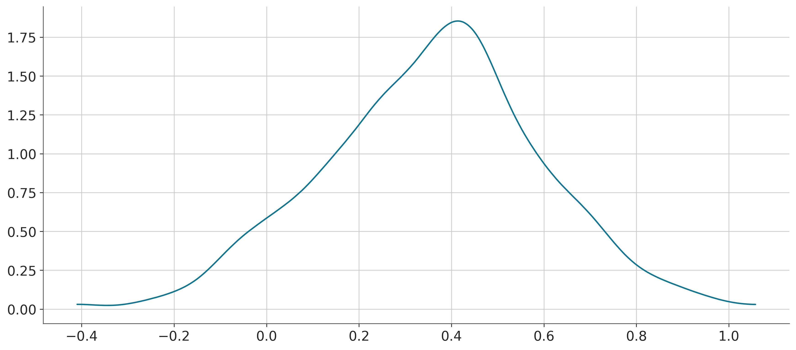

import arviz as az
import pandas as pd
import pymc as pm
import numpy as np
import matplotlib.pyplot as plt
az.style.use("arviz-docgrid")Plotting with PyMC and Arviz
Sheng Long ![]()
Sheng Long
NoteTLDR
This post is about trying to answer a simple question: to what extent does existing functionalities of pymc and arviz implement what can be done in tidybayes …?
Trying to implement the examples here.
RANDOM_SEED = 5
rng = np.random.default_rng(RANDOM_SEED)
n = 10
n_condition = 5
ABC = pd.DataFrame(rng.normal([0, 1, 2, 1, -1], scale=0.5, size=(n, n_condition))).set_axis(['A', 'B', 'C', 'D', 'E'], axis='columns')
ABC = pd.melt(ABC)A snapshot of the data looks like this:
ABC.head(10)| variable | value | |
|---|---|---|
| 0 | A | -0.400966 |
| 1 | A | 0.054853 |
| 2 | A | 0.136384 |
| 3 | A | -0.866067 |
| 4 | A | -0.356657 |
| 5 | A | 0.414928 |
| 6 | A | -0.644709 |
| 7 | A | -0.198095 |
| 8 | A | 0.585148 |
| 9 | A | 0.016529 |
We can try to plot is as follows:
fig, ax = plt.subplots()
ax.scatter(data=ABC, x = "value", y = "variable")
Model
We can fit a hierarchical model with shrinkage towards a global mean. The mathematical formulation is as follows:
\[ \begin{align} \texttt{value} &\sim \mathcal{N}(\alpha_{\text{variable}[i]}, \sigma) \\ \alpha_j &\sim \mathcal{N}(\bar{\alpha}, \sigma_\alpha), j \in [5] \\ \bar{\alpha} &\sim \mathcal{N}(0, 1) \\ \sigma_\alpha &\sim \text{student-t}^+(3, 0, 1) \\ \sigma &\sim \text{student-t}^+(3, 0, 1) \\ \end{align} \]
var_idx, var_value = pd.factorize(ABC['variable'])
coords = {
'var': var_value
}with pm.Model(coords=coords) as ABC_model:
# priors and hyperpriors
alpha_bar = pm.Normal("alpha_bar", 0, 1)
sigma_alpha = pm.HalfStudentT("sigma_alpha", nu=3, sigma=1)
sigma = pm.HalfStudentT("sigma", nu=3, sigma=1)
# likelihood ...?
alpha = pm.Normal("alpha", alpha_bar, sigma_alpha, dims="var")
y_obs = pm.Normal("y_obs", mu=alpha[var_idx],sigma=sigma,observed=ABC['value'])with ABC_model:
idata = pm.sample(progressbar=False)Initializing NUTS using jitter+adapt_diag...
Multiprocess sampling (4 chains in 4 jobs)
NUTS: [alpha_bar, sigma_alpha, sigma, alpha]
Sampling 4 chains for 1_000 tune and 1_000 draw iterations (4_000 + 4_000 draws total) took 19 seconds.Note that in some of the tutorials, they refer to this as idata, perhaps a shorthand for the InferenceData object1. In some other tutorials you would see this being referred to as XXXX_trace. Put simply, it is a container for groups of data.
1 See official document for more details
idata[autoreload of cutils_ext failed: Traceback (most recent call last):
File "/Users/shenglong/Downloads/mika-long.github.io/.venv/lib/python3.13/site-packages/IPython/extensions/autoreload.py", line 325, in check
superreload(m, reload, self.old_objects)
~~~~~~~~~~~^^^^^^^^^^^^^^^^^^^^^^^^^^^^^
File "/Users/shenglong/Downloads/mika-long.github.io/.venv/lib/python3.13/site-packages/IPython/extensions/autoreload.py", line 580, in superreload
module = reload(module)
File "/Users/shenglong/.local/share/uv/python/cpython-3.13.9-macos-x86_64-none/lib/python3.13/importlib/__init__.py", line 128, in reload
raise ModuleNotFoundError(f"spec not found for the module {name!r}", name=name)
ModuleNotFoundError: spec not found for the module 'cutils_ext'
]arviz.InferenceData
-
<xarray.Dataset> Size: 264kB Dimensions: (chain: 4, draw: 1000, var: 5) Coordinates: * chain (chain) int64 32B 0 1 2 3 * draw (draw) int64 8kB 0 1 2 3 4 5 6 ... 993 994 995 996 997 998 999 * var (var) <U1 20B 'A' 'B' 'C' 'D' 'E' Data variables: alpha_bar (chain, draw) float64 32kB 0.7988 0.7276 ... 0.4716 0.5919 alpha (chain, draw, var) float64 160kB 0.1649 0.8276 ... -1.001 sigma_alpha (chain, draw) float64 32kB 1.037 0.8986 0.7145 ... 1.314 0.7436 sigma (chain, draw) float64 32kB 0.3592 0.3608 ... 0.4625 0.3943 Attributes: created_at: 2025-12-18T22:07:06.287062+00:00 arviz_version: 0.22.0 inference_library: pymc inference_library_version: 5.26.1 sampling_time: 19.43943190574646 tuning_steps: 1000 -
<xarray.Dataset> Size: 528kB Dimensions: (chain: 4, draw: 1000) Coordinates: * chain (chain) int64 32B 0 1 2 3 * draw (draw) int64 8kB 0 1 2 3 4 5 ... 995 996 997 998 999 Data variables: (12/18) tree_depth (chain, draw) int64 32kB 3 2 2 3 3 3 ... 3 2 3 3 2 2 process_time_diff (chain, draw) float64 32kB 0.000797 ... 0.001032 index_in_trajectory (chain, draw) int64 32kB 4 -1 -2 2 6 ... -2 -3 4 3 3 n_steps (chain, draw) float64 32kB 7.0 3.0 3.0 ... 3.0 3.0 reached_max_treedepth (chain, draw) bool 4kB False False ... False False largest_eigval (chain, draw) float64 32kB nan nan nan ... nan nan ... ... perf_counter_start (chain, draw) float64 32kB 1.229e+05 ... 1.229e+05 acceptance_rate (chain, draw) float64 32kB 0.9817 1.0 ... 0.8479 energy_error (chain, draw) float64 32kB 0.1371 -0.9504 ... -0.2354 max_energy_error (chain, draw) float64 32kB -0.5344 -0.9504 ... 0.6091 step_size (chain, draw) float64 32kB 0.5511 0.5511 ... 1.152 step_size_bar (chain, draw) float64 32kB 0.7092 0.7092 ... 0.8041 Attributes: created_at: 2025-12-18T22:07:06.348796+00:00 arviz_version: 0.22.0 inference_library: pymc inference_library_version: 5.26.1 sampling_time: 19.43943190574646 tuning_steps: 1000 -
<xarray.Dataset> Size: 800B Dimensions: (y_obs_dim_0: 50) Coordinates: * y_obs_dim_0 (y_obs_dim_0) int64 400B 0 1 2 3 4 5 6 ... 43 44 45 46 47 48 49 Data variables: y_obs (y_obs_dim_0) float64 400B -0.401 0.05485 ... -1.551 -1.128 Attributes: created_at: 2025-12-18T22:07:06.364057+00:00 arviz_version: 0.22.0 inference_library: pymc inference_library_version: 5.26.1
In this case, the InferenceData2 has contains three “datasets”: posterior, sample_stats, and observed_data.
2 In the example in the original documentation, it also has posterior_predictive and prior
We could access the posterior draws simply by directly referencing it:
print(idata.posterior)
print(type(idata.posterior))<xarray.Dataset> Size: 264kB
Dimensions: (chain: 4, draw: 1000, var: 5)
Coordinates:
* chain (chain) int64 32B 0 1 2 3
* draw (draw) int64 8kB 0 1 2 3 4 5 6 ... 993 994 995 996 997 998 999
* var (var) <U1 20B 'A' 'B' 'C' 'D' 'E'
Data variables:
alpha_bar (chain, draw) float64 32kB 0.7988 0.7276 ... 0.4716 0.5919
alpha (chain, draw, var) float64 160kB 0.1649 0.8276 ... -1.001
sigma_alpha (chain, draw) float64 32kB 1.037 0.8986 0.7145 ... 1.314 0.7436
sigma (chain, draw) float64 32kB 0.3592 0.3608 ... 0.4625 0.3943
Attributes:
created_at: 2025-12-18T22:07:06.287062+00:00
arviz_version: 0.22.0
inference_library: pymc
inference_library_version: 5.26.1
sampling_time: 19.43943190574646
tuning_steps: 1000
<class 'xarray.core.dataset.Dataset'>Those who are more familiar with the tidy data format might find the above ways of indexing with coordinates and dimensions confusing. We could turn the Dataset into a DataFrame in tidy form3:
3 See reference documentation here
idata.posterior.to_dataframe().head(10)| alpha_bar | alpha | sigma_alpha | sigma | |||
|---|---|---|---|---|---|---|
| chain | draw | var | ||||
| 0 | 0 | A | 0.798795 | 0.164872 | 1.036728 | 0.359150 |
| B | 0.798795 | 0.827576 | 1.036728 | 0.359150 | ||
| C | 0.798795 | 1.334229 | 1.036728 | 0.359150 | ||
| D | 0.798795 | 0.954767 | 1.036728 | 0.359150 | ||
| E | 0.798795 | -1.032201 | 1.036728 | 0.359150 | ||
| 1 | A | 0.727635 | 0.074987 | 0.898552 | 0.360805 | |
| B | 0.727635 | 0.731381 | 0.898552 | 0.360805 | ||
| C | 0.727635 | 1.529692 | 0.898552 | 0.360805 | ||
| D | 0.727635 | 0.946406 | 0.898552 | 0.360805 | ||
| E | 0.727635 | -1.031409 | 0.898552 | 0.360805 |
Code
# save fitted posterior
# giidata.to_netcdf("ABC_posterior.nc")tidybayes provides functions such as median_qi() and mode_hdi() for calculating point summaries and intervals. Their equivalent in arviz are arviz_stats.eti and arviz.hdi.
print(az.hdi(idata, var_names=["alpha_bar", "sigma"], hdi_prob = 0.95).to_dataframe()) alpha_bar sigma
hdi
lower -0.574370 0.346919
higher 1.308319 0.528288import arviz_stats as avz avz.eti(idata, var_names=["alpha_bar", "sigma"], prob = 0.95).to_dataframe()| alpha_bar | sigma | |
|---|---|---|
| ci_bound | ||
| lower | -0.592632 | 0.352223 |
| upper | 1.290091 | 0.536236 |
We can also get a table of summary statistics with the arviz.summary function:
az.summary(idata, stat_focus="median", hdi_prob=0.95)| median | mad | eti_2.5% | eti_97.5% | mcse_median | ess_median | ess_tail | r_hat | |
|---|---|---|---|---|---|---|---|---|
| alpha_bar | 0.367 | 0.306 | -0.593 | 1.290 | 0.008 | 4272.107 | 2404.0 | 1.0 |
| alpha[A] | -0.115 | 0.089 | -0.385 | 0.152 | 0.002 | 5423.275 | 2903.0 | 1.0 |
| alpha[B] | 0.757 | 0.088 | 0.499 | 1.024 | 0.002 | 4692.825 | 3062.0 | 1.0 |
| alpha[C] | 1.530 | 0.089 | 1.265 | 1.806 | 0.002 | 5169.563 | 3147.0 | 1.0 |
| alpha[D] | 1.015 | 0.090 | 0.742 | 1.272 | 0.003 | 4640.295 | 2776.0 | 1.0 |
| alpha[E] | -1.016 | 0.090 | -1.284 | -0.733 | 0.003 | 5131.215 | 3237.0 | 1.0 |
| sigma_alpha | 1.043 | 0.224 | 0.601 | 2.238 | 0.006 | 3460.928 | 2362.0 | 1.0 |
| sigma | 0.426 | 0.032 | 0.352 | 0.536 | 0.001 | 4113.274 | 3118.0 | 1.0 |
az.summary(idata, stat_focus="mean", hdi_prob=0.95)| mean | sd | hdi_2.5% | hdi_97.5% | mcse_mean | mcse_sd | ess_bulk | ess_tail | r_hat | |
|---|---|---|---|---|---|---|---|---|---|
| alpha_bar | 0.359 | 0.477 | -0.574 | 1.308 | 0.008 | 0.010 | 3632.0 | 2404.0 | 1.0 |
| alpha[A] | -0.117 | 0.135 | -0.364 | 0.170 | 0.002 | 0.002 | 5170.0 | 2903.0 | 1.0 |
| alpha[B] | 0.760 | 0.133 | 0.504 | 1.027 | 0.002 | 0.002 | 4871.0 | 3062.0 | 1.0 |
| alpha[C] | 1.532 | 0.137 | 1.269 | 1.810 | 0.002 | 0.002 | 5601.0 | 3147.0 | 1.0 |
| alpha[D] | 1.012 | 0.135 | 0.757 | 1.284 | 0.002 | 0.002 | 4985.0 | 2776.0 | 1.0 |
| alpha[E] | -1.014 | 0.137 | -1.266 | -0.721 | 0.002 | 0.002 | 4918.0 | 3237.0 | 1.0 |
| sigma_alpha | 1.138 | 0.434 | 0.524 | 1.966 | 0.009 | 0.014 | 3212.0 | 2362.0 | 1.0 |
| sigma | 0.431 | 0.047 | 0.347 | 0.528 | 0.001 | 0.001 | 4120.0 | 3118.0 | 1.0 |
az.plot_forest(idata, combined=True, var_names=["alpha"], hdi_prob=0.95)array([<Axes: title={'center': '95.0% HDI'}>], dtype=object)
Intervals with densities
az.plot_forest(idata, combined=True, var_names=["alpha"], hdi_prob=0.95, kind="ridgeplot")array([<Axes: >], dtype=object)
… yeah the above kind of looks ugly LOL … to actually reproduce the slabinterval geom one would need to do something else …
# TODO Posterior means and predictions
idata.posterior['alpha_bar'].mean()<xarray.DataArray 'alpha_bar' ()> Size: 8B array(0.3586002)
az.plot_dist(idata.posterior['alpha_bar'].mean(dim="chain"))